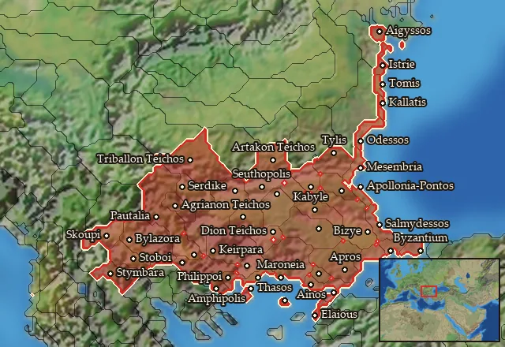

RIS wiki › mercenaries
Thrace
Main campaignRIS Light
← all mercenary pools · wiki index
Mercenary pool: 6 units for hire in 46 regions.

Mercenaries
| Unit | Cost (dn) | Experience | At start | Most in pool | Added per turn | Who can hire | |
|---|---|---|---|---|---|---|---|
| Mercenary Celtic Spearmen | 3,281 | 0 | 1 | 2 | 0.2213–0.4427 | Any faction | |
| Mercenary Thracian Rhomphaiophoroi | 3,503 | 0 | 0 | 1 | 0.2073–0.4146 | Any faction | |
| Mercenary Celtic Skirmishers | 2,303 | 0 | 1 | 2 | 0.215–0.43 | Any faction | |
| Mercenary Thracian Peltasts | 2,826 | 0 | 1 | 2 | 0.3504–0.7008 | Any faction | |
| Mercenary Thracian Hippakontistai | 3,636 | 1 | 1 | 2 | 0.2724–0.5447 | Any faction | |
| Mercenary Celtic Light Cavalry | 3,997 | 1 | 0 | 1 | 0.1074–0.2147 | Any faction |
Regions (46)
Agriania · Aigyssia · Antheia · Artakia · Astia · Axios · Basilike Brenaia · Bessike · Bosporos · Brenaia · Briantike-Korpilike · Datos · Denthelentike · Deuriopos-Pelagonia · Diotike · Edonis · Elaiousa · Erigonia · Eumolpia · Halmyris · Hebros · Hellenike Bistonia · Hesperos Triballia · Kabylia · Kainia · Kallatia · Kardia · Koilaletia · Korelia · Kyrmianaia-Nipsaia · Maidia · Mesambria · Odessia · Paionia · Poltymbria · Pyrogeria · Samothrake · Sapaia-Bistonia · Sintike-Odomantike · Thasos · Thraikie Propontis · Thynia · Tomea · Tranipsia-Melanditaia · Treria-Tilataia · Tyle